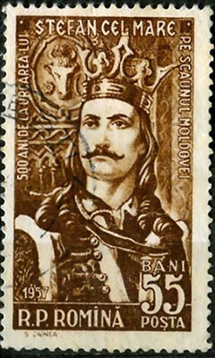
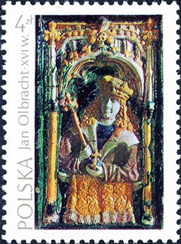
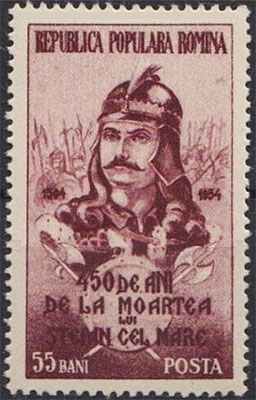

DUMBRAVA ROŞIE
Victor Manta, PWO
Dedicată tatălui meu
Fost-au Ştefan Vodă om nu mare de stat, mânios şi de grabu vărsătoriu de sânge nevinovat; de multe ori la ospeţe omora fără judeţu. Amintirlea era om întreg la fire, neleneşu şi lucrul său îl ştia a-l acoperi şi unde nu gândiai, acolo îl aflai. Grigore Ureche, Letopiseţul Ţării Moldovei.
Adolescent fiind, mă aflam împreună cu tatăl meu în preajma satului Valea Cosminului, cam la 10 Km de oraşul Cernăuţi, capitala Bucovinei de Nord, totul parte a Ucrainei sovietice. Era în primăvara anului 1956, ne înconjura un verde intens, pe o zi însorită şi liniştită.
Am ajuns în acele locuri practicând autostopul camioanelor, mijlocul de circulaţie cel mai răspândit din acea vreme. La un moment dat tata l-a rugat pe şofer să oprească pentru o pauză de 10 minute, timp în care şoferul şi-a aprins o ţigară, iar eu mi-am urmat tatăl, care intrase în pădurea aflată lângă drum.
„Aceasta este cea mai cunoscută şi cea mai tristă pădure din istoria României”, mi-a spus deodată tata, arătându-mi stejarii din jurul nostru. „Se numeşte Dumbrava Roşie , iar undeva pe aici ar trebui să se afle şi Stejarul lui Ştefan cel Mare, rămas intact de aproape 500 de ani şi numit astfel în cinstea Domnitorului vechii Moldove”, a continuat el, după care s-a oprit, aşteptând întrebările mele. A urmat, aşa cum se aştepta, întrebarea mea de ce i se spune „Roşie” acelei păduri, când în mod vizibil ea era de o altă culoare. A urmat o scurtă povestire a tatălui meu, pe care o am şi astăzi în minte, şi pe care o relatez completată cu informaţii pe care le-am descoperit mai târziu.

Este vorba în principal despre Ştefan al III-lea (n. 1438 - 1439, Borzeşti - d. 2 iulie 1504, Suceava), supranumit Ştefan cel Mare sau, după canonizarea sa de către Biserica Ortodoxă Română, Ştefan cel Mare şi Sfânt. Domn al Moldovei din 1457, el a rămas pe tron timp de 47 de ani, aceasta fiind cea mai lungă domnie din epoca medievală a Ţărilor Române.
Ştefan a dus peste 40 de războaie sau bătălii, în marea lor majoritate victorioase. Una dintre marile sale victorii a fost cea repurtată asupra otomanilor în Bătălia de la Podul Înalt (1475), care a fost preţuită şi cinstită de creştinătatea vremii. Izbânda se va dovedi însă vremelnică.


O altă mare victorie a lui Ştefan a fost cea de la Codrii Cosminului, repurtată împotriva Regelui Ioan I Albert al Poloniei. Războiului dintre cele două ţări, izbucnit pentru un motiv parţial obscur, nu era neobişnuit pentru acele vremuri în care capetele încoronate se luptau unele cu altele, făcând alianţe ce se legau şi se dezlegau, în funcţie de cerinţele momentului. Totul a pornit de la ideea unei lupte comune a Poloniei şi Ungariei împotriva Porţii Otomane, în alianţă cu Moldova, care pierduse în favoarea otomanilor Chilia şi Cetatea Albă (1484), motiv pentru care Ştefan a cerut sprijinul suzeranului său Ioan Albert.
În anul 1497 Ioan Albert a adunat cu greu o oaste de 80.000 de oameni şi se pregătea pentru expediţia contra Porţii, când Ştefan a invadat pe neaşteptate Rutenia/Galiţia. Această invazie l-ar fi făcut pe Ioan Albert să-şi amâne planurile şi să atace Moldova. Într-o altă versiune se afirmă că Ioan Albert avea de fapt demult scopul ascuns să-l detroneze şi înlocuiască pe Ştefan. Acesta din urmă ar fi aflat despre aceste planuri şi s-a pregătit, astfel încât trupele poloneze, atunci când au intrat în Moldova în drumul lor de a-i ataca pe otomani, s-au trezit în faţă cu o ţară ce le devenise ostilă.
Ştefan s-a închis într-o primă fază în Cetatea Suceava, care a fost asediată de armata poloneză. Polonezii nu au reuşit însă să organizeze un asediu cu izbândă, iar după 4 luni pierdute bolile din tabăra proprie şi ostilitatea localnicilor l-au făcut pe Ioan Albert să bată în retragere, învinuindu-l pe Ştefan de a se fi aliat cu duşmanul comun otoman.
Hărţuind armata poloneză, Ştefan a reuşit o acţiune îndrăzneaţă, atrăgând între 5.000 şi 10.000 de cavaleri polonezi bine echipaţi, dar insubordonaţi, într-o pădure pregătită de oamenii săi. Moldovenii au tăiat copaci, pe care i-au doborât între cavaleri, pentru a diviza oastea poloneză şi a nu lasă spaţiu de manevră acesteia. Polonezii s-au pomenit răzleţiţi, daţi jos de pe cai cu ghioagele şi loviţi de bâtele ţăranilor sau de spadele vitejilor.
Soarta pe care le-a rezervat-o Ştefan nobililor polonezi înfrânţi şi capturaţi a fost cumplită şi a rămas descrisă astfel în cronici şi legende. Polonezii au fost înjugaţi la pluguri, pentru a ara un câmp larg, în brazdele căruia au sădit ghinde. Au pierit cu toţii, acoperind cu sângele lor brazdele pe care le arau şi căzând rând pe rând istoviţi, sub loviturile necruţătoare ale biciurilor ostaşilor lui Ştefan cel Mare.
Despre această bătălie şi despre umilinţa crudă suferită după ea de curajoasa, dar nechibzuita szlachta poloneză, mi-a povestit tatăl meu, şi astfel am aflat de unde a ajuns până în zilele noastre, peste secole, acel numele deosebit de Dumbrava Roşie .
După întoarcerea din expediţie, Regele Ioan Albert a confiscat cu sutele domeniile luptătorilor săi nedisciplinaţi, dar în pofida acestui fapt şi-a păstrat deosebita sa popularitate.
În acest articol filatelic sunt prezentate diverse mărci poştale, emise în principal de România şi Republica Moldova, care îl arată pe Ştefan cel Mare, dar şi una emisă de Polonia, dedicată regelui Jan I Olbracht (n. 1459 - d. 1501).
Surse: Ştefan cel Mare , Stephen III of Moldavia , John I Albert , Bătălia de la Codrii Cosminului
.jpg)
.jpg)
.jpg)
.jpg)
.jpg)
.jpg)
Published: March 27, 2017. Revised: March 25, 2017. |